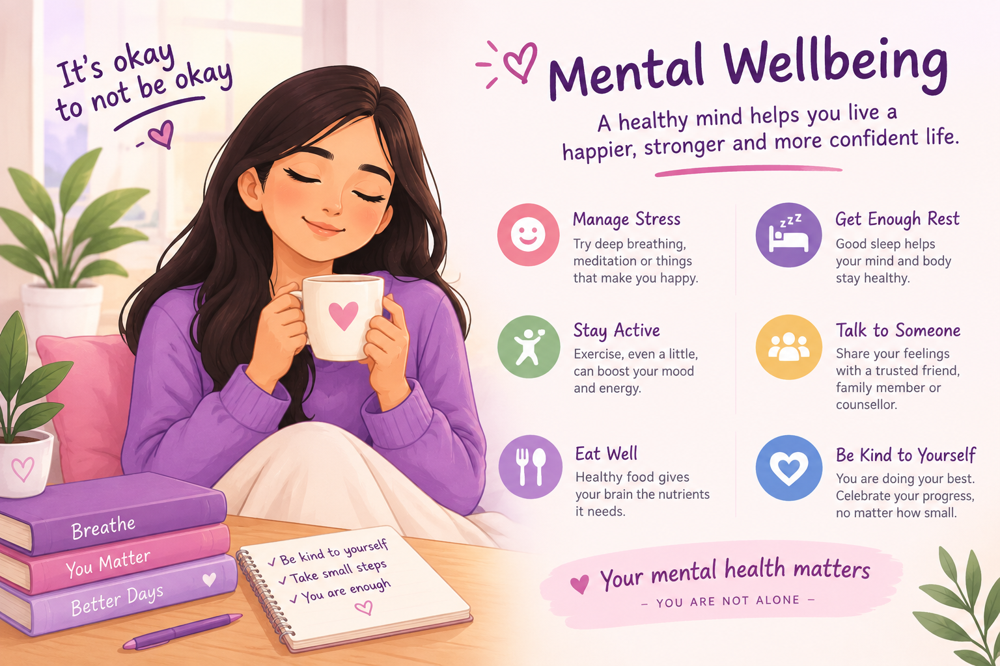

🧠 Mental Wellbeing
Understand your mental wellbeing, take care of your emotional health, and know when it is important to seek professional support.

🌸 Your Mental Health Matters
Mental wellbeing is about how you feel, think and manage everyday situations.
Everyone can experience stress, worry, sadness or difficult emotions at different times in life. Taking care of your mental wellbeing is an important part of overall health.
💗 How Can Mental Health Affect You?
Emotional and mental difficulties can affect people in different ways. Some common experiences may include:
Stress
You may feel worried, pressured or overwhelmed by everyday situations.
Sleep Changes
Stress and difficult emotions can sometimes affect your sleep or rest.
Low Mood
You may feel sad, tired or lose interest in activities you usually enjoy.
Concentration
Stress can sometimes make it difficult to focus on everyday tasks.
Feeling Alone
You may feel isolated or find it difficult to talk about what you are experiencing.
Everyone Is Different
Mental wellbeing affects people differently, and every person's experience is unique.
💗 How Should You Take Care?
✅ What To Do
- Get enough sleep and regular rest.
- Stay physically active in a way that feels comfortable.
- Eat regular, balanced meals and drink enough water.
- Spend time with supportive friends and family.
- Take short breaks when you feel stressed or overwhelmed.
- Try simple breathing or relaxation activities.
- Make time for hobbies and activities you enjoy.
- Talk about your feelings with someone you trust.
❌ What To Avoid
- Do not ignore emotional difficulties that continue or affect daily life.
- Do not feel ashamed about asking for mental-health support.
- Do not try to handle every difficult situation completely alone.
- Do not put unnecessary pressure on yourself to be perfect.
- Avoid using alcohol, tobacco or drugs to cope with emotional difficulties.
🚨 When Should You Seek Professional Help?
Speak with a qualified healthcare or mental-health professional if difficult feelings continue, become difficult to manage, or start affecting your daily life.
- You feel persistently sad, worried or overwhelmed.
- Your emotions are affecting your studies, work, relationships or everyday activities.
- You are having ongoing sleep or concentration difficulties.
- You are finding it increasingly difficult to cope with everyday situations.
- You feel that you need professional support or someone to talk to.
If you feel that you may hurt yourself or someone else, or you cannot keep yourself safe, seek urgent help from local emergency services or go to the nearest hospital emergency department.
🏥 Need Mental Health Support?
If you are concerned about your mental wellbeing, consider speaking with a qualified psychologist, psychiatrist, counsellor or other healthcare professional.